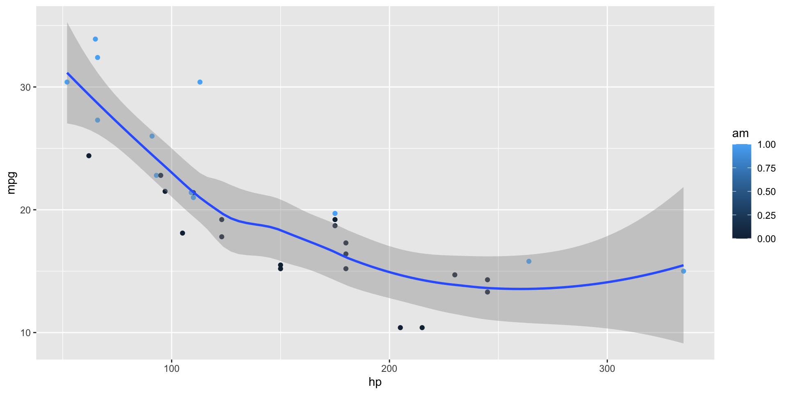

Quarto
Presentations
File formats
Quarto supports a variety of formats for creating presentations, including:
revealjspptxbeamer
brand.yml is currently supported only in revealjs.
reveal.js
reveal.js presentations allow you to create stunning presentations on the web.
- Present code and LaTeX equations
- Include computations in slide output
- Add image, video, and iFrame backgrounds
- Add fancy transitions and animations
- Activate scroll view
…and much more
reveal.js basics
reveal.js basics
Building slides
Presenting slides
Branding slides
Converting to reveal.js
Convert your document to a reveal.js presentation by editing format in the YAML heading:
Learn more: Revealjs
Example
Example
Example with sections
Example with sections
Your turn
- Change the format: In your document’s YAML header, change
format: htmltoformat: revealjs. - Add slides: Use first-level headings (
#) to create a new slide. Use other Markdown headings and text for content on each slide. - Render: Save and render your document. Quarto will create an HTML file that is a fully functional slide deck.
Note: You can remove code-fold and code-summary from the YAML header, as these are for HTML documents and do not apply to presentations.
Building slides
reveal.js basics
Building slides
Presenting slides
Branding slides
Editing slides
The quarto-revealjs-editable extension allows the repositioning and resizing of images and text divs directly in the previewed slides.

Learn more: quarto-revealjs-editable
Content overflow
Use the .smaller class to use a smaller typeface so that more text fits on the slide. For example:
Use the .scrollable class to make off-slide content available by scrolling. For example:
Slide transitions
Edit the YAML to change the slide transitions:
Learn more: Slide Transitions
Slide transitions
The next few slides will transition using the slide transition
| Transition | Description |
|---|---|
none |
No transition (default, switch instantly) |
fade |
Cross fade |
slide |
Slide horizontally |
convex |
Slide at a convex angle |
concave |
Slide at a concave angle |
zoom |
Scale the incoming slide so it grows in from the center of the screen. |
Tabsets
| mpg | cyl | disp | hp | drat | wt | qsec | vs | am | gear | carb | |
|---|---|---|---|---|---|---|---|---|---|---|---|
| Mazda RX4 | 21.0 | 6 | 160.0 | 110 | 3.90 | 2.620 | 16.46 | 0 | 1 | 4 | 4 |
| Mazda RX4 Wag | 21.0 | 6 | 160.0 | 110 | 3.90 | 2.875 | 17.02 | 0 | 1 | 4 | 4 |
| Datsun 710 | 22.8 | 4 | 108.0 | 93 | 3.85 | 2.320 | 18.61 | 1 | 1 | 4 | 1 |
| Hornet 4 Drive | 21.4 | 6 | 258.0 | 110 | 3.08 | 3.215 | 19.44 | 1 | 0 | 3 | 1 |
| Hornet Sportabout | 18.7 | 8 | 360.0 | 175 | 3.15 | 3.440 | 17.02 | 0 | 0 | 3 | 2 |
| Valiant | 18.1 | 6 | 225.0 | 105 | 2.76 | 3.460 | 20.22 | 1 | 0 | 3 | 1 |
| Duster 360 | 14.3 | 8 | 360.0 | 245 | 3.21 | 3.570 | 15.84 | 0 | 0 | 3 | 4 |
| Merc 240D | 24.4 | 4 | 146.7 | 62 | 3.69 | 3.190 | 20.00 | 1 | 0 | 4 | 2 |
| Merc 230 | 22.8 | 4 | 140.8 | 95 | 3.92 | 3.150 | 22.90 | 1 | 0 | 4 | 2 |
| Merc 280 | 19.2 | 6 | 167.6 | 123 | 3.92 | 3.440 | 18.30 | 1 | 0 | 4 | 4 |
| Merc 280C | 17.8 | 6 | 167.6 | 123 | 3.92 | 3.440 | 18.90 | 1 | 0 | 4 | 4 |
| Merc 450SE | 16.4 | 8 | 275.8 | 180 | 3.07 | 4.070 | 17.40 | 0 | 0 | 3 | 3 |
| Merc 450SL | 17.3 | 8 | 275.8 | 180 | 3.07 | 3.730 | 17.60 | 0 | 0 | 3 | 3 |
| Merc 450SLC | 15.2 | 8 | 275.8 | 180 | 3.07 | 3.780 | 18.00 | 0 | 0 | 3 | 3 |
| Cadillac Fleetwood | 10.4 | 8 | 472.0 | 205 | 2.93 | 5.250 | 17.98 | 0 | 0 | 3 | 4 |
| Lincoln Continental | 10.4 | 8 | 460.0 | 215 | 3.00 | 5.424 | 17.82 | 0 | 0 | 3 | 4 |
| Chrysler Imperial | 14.7 | 8 | 440.0 | 230 | 3.23 | 5.345 | 17.42 | 0 | 0 | 3 | 4 |
| Fiat 128 | 32.4 | 4 | 78.7 | 66 | 4.08 | 2.200 | 19.47 | 1 | 1 | 4 | 1 |
| Honda Civic | 30.4 | 4 | 75.7 | 52 | 4.93 | 1.615 | 18.52 | 1 | 1 | 4 | 2 |
| Toyota Corolla | 33.9 | 4 | 71.1 | 65 | 4.22 | 1.835 | 19.90 | 1 | 1 | 4 | 1 |
| Toyota Corona | 21.5 | 4 | 120.1 | 97 | 3.70 | 2.465 | 20.01 | 1 | 0 | 3 | 1 |
| Dodge Challenger | 15.5 | 8 | 318.0 | 150 | 2.76 | 3.520 | 16.87 | 0 | 0 | 3 | 2 |
| AMC Javelin | 15.2 | 8 | 304.0 | 150 | 3.15 | 3.435 | 17.30 | 0 | 0 | 3 | 2 |
| Camaro Z28 | 13.3 | 8 | 350.0 | 245 | 3.73 | 3.840 | 15.41 | 0 | 0 | 3 | 4 |
| Pontiac Firebird | 19.2 | 8 | 400.0 | 175 | 3.08 | 3.845 | 17.05 | 0 | 0 | 3 | 2 |
| Fiat X1-9 | 27.3 | 4 | 79.0 | 66 | 4.08 | 1.935 | 18.90 | 1 | 1 | 4 | 1 |
| Porsche 914-2 | 26.0 | 4 | 120.3 | 91 | 4.43 | 2.140 | 16.70 | 0 | 1 | 5 | 2 |
| Lotus Europa | 30.4 | 4 | 95.1 | 113 | 3.77 | 1.513 | 16.90 | 1 | 1 | 5 | 2 |
| Ford Pantera L | 15.8 | 8 | 351.0 | 264 | 4.22 | 3.170 | 14.50 | 0 | 1 | 5 | 4 |
| Ferrari Dino | 19.7 | 6 | 145.0 | 175 | 3.62 | 2.770 | 15.50 | 0 | 1 | 5 | 6 |
| Maserati Bora | 15.0 | 8 | 301.0 | 335 | 3.54 | 3.570 | 14.60 | 0 | 1 | 5 | 8 |
| Volvo 142E | 21.4 | 4 | 121.0 | 109 | 4.11 | 2.780 | 18.60 | 1 | 1 | 4 | 2 |
Learn more: Tabsets
Column layout
Arrange content into columns of varying widths:
Motor Trend Car Road Tests
The data was extracted from the 1974 Motor Trend US magazine, and comprises fuel consumption and 10 aspects of automobile design and performance for 32 automobiles.
| mpg | cyl | disp | hp | wt | |
|---|---|---|---|---|---|
| Mazda RX4 | 21.0 | 6 | 160 | 110 | 2.620 |
| Mazda RX4 Wag | 21.0 | 6 | 160 | 110 | 2.875 |
| Datsun 710 | 22.8 | 4 | 108 | 93 | 2.320 |
| Hornet 4 Drive | 21.4 | 6 | 258 | 110 | 3.215 |
| Hornet Sportabout | 18.7 | 8 | 360 | 175 | 3.440 |
| Valiant | 18.1 | 6 | 225 | 105 | 3.460 |
Learn more: Multiple Columns
Line highlighting
- Highlight specific lines for emphasis
- Incrementally highlight additional lines
Learn more: Line Highlighting
Executable code

Learn more: Executable Code
LaTeX equations
MathJax rendering of equations to HTML
\[\begin{gather*}
a_1=b_1+c_1\\
a_2=b_2+c_2-d_2+e_2
\end{gather*}\]
\[\begin{align}
a_{11}& =b_{11}&
a_{12}& =b_{12}\\
a_{21}& =b_{21}&
a_{22}& =b_{22}+c_{22}
\end{align}\]
Learn more: LaTeX Equations
Incremental lists
Lists can optionally be displayed incrementally:
- First item
- Second item
- Third item
Insert pauses to make other types of content display incrementally.
Learn more: Incremental Lists
Fragments
Incremental text display and animation with fragments:
Fade in
Slide up while fading in
Slide left while fading in
Fade in then semi out
Absolute position
Position images or other elements at precise locations


Learn more: Absolute Position
Interactive slides
Include Jupyter widgets and htmlwidgets in your presentations
Learn more: Jupyter widgets, htmlwidgets
Interactive slides
#| '!! shinylive warning !!': |
#| shinylive does not work in self-contained HTML documents.
#| Please set `embed-resources: false` in your metadata.
#| standalone: true
#| viewerHeight: 500
library(shiny)
library(bslib)
# Define UI for app that draws a histogram ----
ui <- page_sidebar(
sidebar = sidebar(open = "open",
numericInput("n", "Sample count", 100),
checkboxInput("pause", "Pause", FALSE),
),
plotOutput("plot", width=1100)
)
server <- function(input, output, session) {
data <- reactive({
input$resample
if (!isTRUE(input$pause)) {
invalidateLater(1000)
}
rnorm(input$n)
})
output$plot <- renderPlot({
hist(data(),
breaks = 40,
xlim = c(-2, 2),
ylim = c(0, 1),
lty = "blank",
xlab = "value",
freq = FALSE,
main = ""
)
x <- seq(from = -2, to = 2, length.out = 500)
y <- dnorm(x)
lines(x, y, lwd=1.5)
lwd <- 5
abline(v=0, col="red", lwd=lwd, lty=2)
abline(v=mean(data()), col="blue", lwd=lwd, lty=1)
legend(legend = c("Normal", "Mean", "Sample mean"),
col = c("black", "red", "blue"),
lty = c(1, 2, 1),
lwd = c(1, lwd, lwd),
x = 1,
y = 0.9
)
}, res=140)
}
# Create Shiny app ----
shinyApp(ui = ui, server = server)Learn more: Observable, Shiny, Component Layout
Your turn
- Shrink the heading: Add
{.smaller}to your heading to decrease its font size, like this:## Global Happiness Trends {.smaller}. - Create two columns: Place your plot and table side-by-side. Adjust the percentages as needed.
- Add tabsets: Use :
:: panel-tabseton the “Country-Level Analysis” slide to organize your content. - Add a transition: To improve the flow, add
slide-transition: slideto your YAML header. Other options includefade,convex,concave, orzoom.
Presenting slides
reveal.js basics
Building slides
Presenting slides
Branding slides
Easy navigation
Quickly jump to other parts of your presentation

Toggle the slide menu with the menu button (bottom left of slide) to go to other slides and access presentation tools.
You can also press mm to toggle the menu open and closed.
You can also press gg to toggle ‘Jump To Slide’ modal box to quickly go to one of your slide using its number or id.
Learn more: Navigation / Jump To Slide
Jump to slide
Quickly jump to other parts of your presentation
Chalkboard
Free form drawing and slide annotations

Use the chalkboard button at the bottom left of the slide to toggle the chalkboard.
Use the notes canvas button at the bottom left of the slide to toggle drawing on top of the current slide.
You can also press bb to toggle the chalkboard or cc to toggle the notes canvas.
Learn more: Chalkboard
Point of view
press oo to toggle overview mode:

Hold down the AltAlt/OptionOption and click on any element to zoom towards it—try it now on this slide.
Learn more: Overview Mode, Slide Zoom
Preview links
Navigate to hyperlinks without disrupting the flow of your presentation.
Use the preview-links option to open links in an iframe on top of your slides. Try clicking the link below for a demonstration:
Learn more: Preview Links
Speaker view
press ss (or use the tools in presentation menu  ) to open speaker view
) to open speaker view
Learn more: Speaker View
Branding slides
reveal.js basics
Building slides
Presenting slides
Branding slides
Themes
10 Built-in themes


Learn more: Themes
reveal.js with brand.yml
The _brand.yml file in the root directory of your project (with or without a _quarto.yml file) will automatically apply the brand to your revealjs documents.
- The
revealjsformat does not support switching between light and dark modes.
Title slide background
Add a custom background to the title slide using the title-slide-attributes key:
Learn more: Custom Background
Slide backgrounds
Set the background attribute on a slide to change the background color (all CSS color formats are supported).
Use {{< brand color COLOR_NAME BRAND_MODE >}} to return the brand color named COLOR_NAME as a string.
Learn more: Slide Backgrounds
Media backgrounds
You can also use the following as a slide background:
An image:
background-imageA video:
background-videoAn iframe:
background-iframe
And more…
- Touch optimized (presentations look great on mobile, swipe to navigate slides)
- Footer & Logo (optionally specify custom footer per-slide or hide global footer)
- Auto-Slide (step through slides automatically, without any user input)
- Multiplex (allows your audience to follow the slides of the presentation you are controlling on their own phone, tablet or laptop).
Learn more: Quarto Presentations
Your turn
- Change the title slide background.
- Find an image on Unsplash and get the direct URL to the image file.
- Add
title-slide-attributesto your YAML header and specify thedata-background-imageattribute with the image’s URL. - If it’s a dark photo, you may want to change
data-background-colorto a dark color so that it uses a light font color.
- Edit Conclusion slide background color: Use the brand.yml shortcodes to change the color to
primary.

pos.it/quarto-brand-conf25